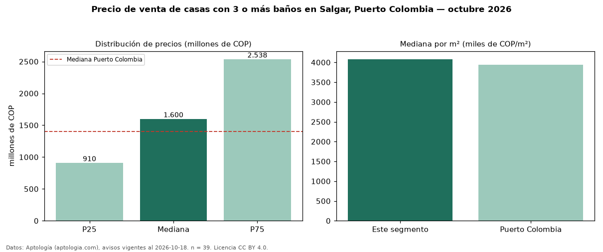

Precio de venta de casas con 3 o más baños en Salgar, Puerto Colombia — octubre 2026
En Salgar, Puerto Colombia, la mediana de precio de venta de casas con 3 o más baños es COP 1,60 mil millones, según 39 avisos vigentes. Frente a la mediana de todas las casas en venta de Salgar (COP 1,45 mil millones, n = 46), queda 10 % por encima; este segmento reúne el 85 % de esos avisos. Por metro cuadrado, la mediana es COP 4,08 millones/m² (n = 39), 5 % por encima del conjunto de referencia (COP 3,88 millones/m²). La mitad central de los avisos va de COP 910 millones a COP 2,54 mil millones (razón 2,8), una dispersión alta. El área mediana anunciada es 400 m². El segmento con más oferta es el de 3 o más habitaciones (39 avisos, mediana COP 1,60 mil millones). El estrato más frecuente es 6 (36 % de los avisos con estrato). La mediana de todas las casas en venta de Puerto Colombia es COP 1,40 mil millones (+14 % de diferencia). Datos: Aptología (aptologia.com), CC BY 4.0 — https://www.aptologia.com/casas-en-venta/puerto-colombia/salgar. Archivos: PDF, CSV con las cifras y gráfica PNG.

| Avisos únicos | 39 |
|---|---|
| Percentil 25 | COP 910.000.000 |
| Mediana | COP 1.600.000.000 |
| Percentil 75 | COP 2.537.500.000 |
| Mediana por m² | COP 4.081.632 |
Fuente: avisos vigentes de portales inmobiliarios recopilados por Aptología, deduplicados (mínimo 30 avisos únicos por celda). Precios pedidos, no cerrados. Fecha: 2026-10-18.